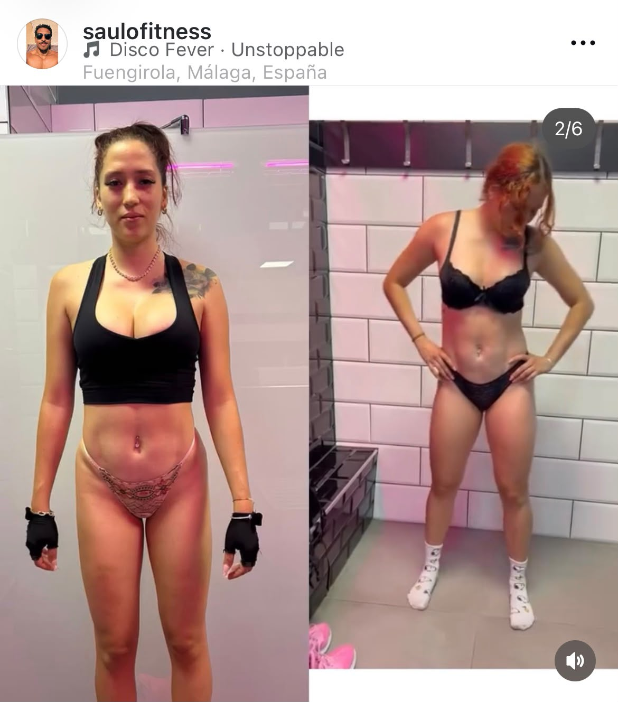

Caso real 01
Mais massa muscular e presença física
Um processo focado em força, aderência e melhora progressiva da composição corporal.
Casos de sucesso
Progresso visível, trabalho consistente e uma evolução que não depende de improviso.
Um processo focado em força, aderência e melhora progressiva da composição corporal.

Treino e hábitos ajustados para alcançar uma mudança visível sem perder uma estrutura sustentável.

Reeducação do treino e do acompanhamento para deixar de improvisar e avançar com uma direção clara.

Uma mudança construída com sessões bem planejadas, constância e acompanhamento próximo.

Melhora corporal visível com foco em técnica, frequência e um planejamento que pode ser mantido.

Quando o objetivo exige mais precisão, o plano é ajustado com mais controle, mais dados e mais compromisso.